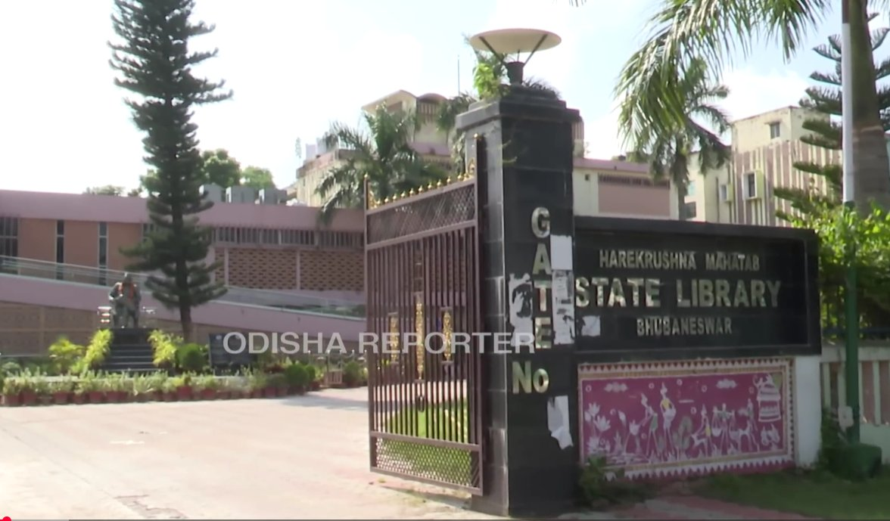
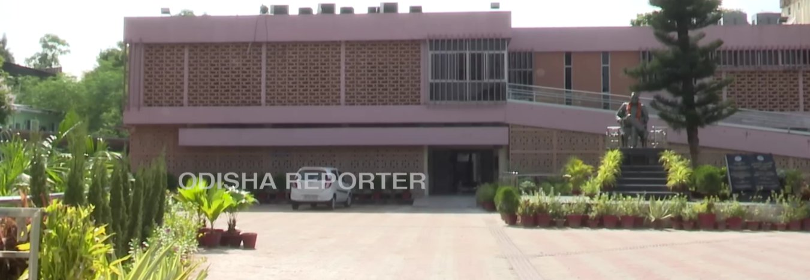
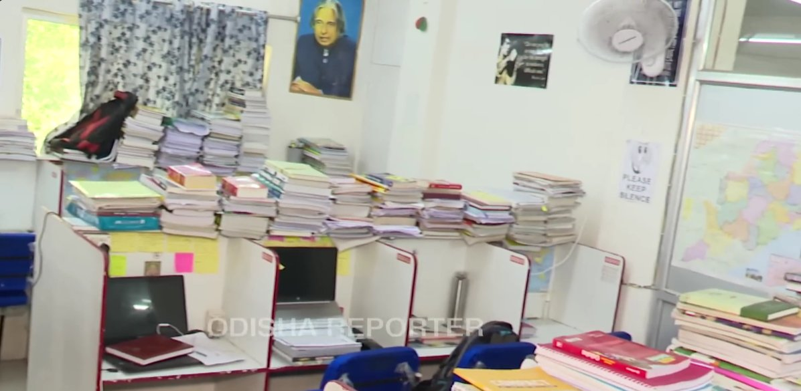
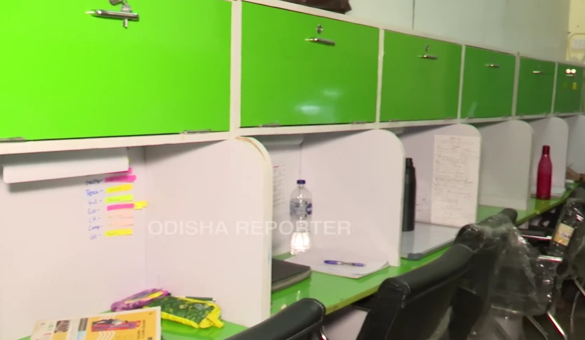

"The right library is not just about AC and WiFi. It's about sitting down at 7 AM, opening your notes, looking up, and seeing 40 other focused people — and feeling the pressure of their discipline make you better. That atmosphere is what you're actually paying for."
📚 Before You Choose — What Exam Aspirants Actually Need
A library for casual reading and a library for serious competitive exam preparation are two different things. Here's what genuinely matters — and what to ask before joining any reading room in Bhubaneswar:
🏛️ 1. Harekrushna Mahtab State Library (HKM State Library)
The Harekrushna Mahtab State Library is the most significant public library in Odisha — the apex library of the entire state public library system, awarded Best State Library of India. Completed in 1959, it houses the State Library of Odisha and the Public Library for Bhubaneswar — a four-storeyed spread across 70,000 square feet on Sachivalaya Marg, right next to the State Secretariat.
When students in Bhubaneswar say "I'm going to the State Library," this is the building they mean. The reading hall is expansive — 350 seats spread across multiple floors. You will find everything from retired government officers reading Odia dailies to serious UPSC aspirants working through Laxmikant's Indian Polity. The collection is enormous: Odia language texts, English reference books, bound periodicals, government reports, and a dedicated newspaper section with every major daily.
Facilities
Membership — The Easiest Process in the City
Fill up the membership form with two passport-size photos. That's it. The membership fee is ₹5 for three years. The Director may also permit casual visitors to use the library on payment of ₹3 for up to 7 days. You can walk in with ₹3, show your ID, and sit in Odisha's largest public library for a week to try it out before committing.
The AC Question — Be Honest With Yourself
The library has future plans including air conditioning of the full building. Full AC is not yet implemented as of March 2026. The building has ceiling fans and some partial cooling in specific sections. For October–February, the high ceilings and thick walls keep it comfortable. For April–June, you will feel the heat by mid-afternoon. This is the biggest caveat about HKM State Library for summer visitors.


📚 2. Vidyarthi Reading Hub & Library — CRP Square (IRC Village)
The CRP Square branch at IRC Village is the most popular Vidyarthi Hub location for aspirants from the Nayapalli–Chandrasekharpur belt. It's behind Vanik Institute — a landmark familiar to every aspirant who's walked the CRP Square–IRC Village stretch for coaching classes. Established in 2018, it's consistently rated 4.7/5 with 263 reviews on Justdial — the highest-rated private reading room in this area of the city.
Facilities — What You Actually Get
Fee Structure (2025-26 Estimates)
| Plan | Estimated Fee |
|---|---|
| Monthly | ₹800–₹1,200 |
| Quarterly | ₹2,200–₹3,200 |
| Half-Yearly | ₹4,000–₹5,500 |
| Annual | ₹7,000–₹9,000 |
A tour of study libraries and self-study spaces in Bhubaneswar — timings, fees and what to expect inside for UPSC, OPSC and competitive exam aspirants.


📚 3. Vidyarthi Reading Hub & Library — Saheed Nagar Branch
This branch is on the 3rd floor of the ACADJEE building, in the lane behind Aangan Restaurant at Saheed Nagar — which puts it above street level, away from road noise. The elevation is actually a feature: the reading room is very quiet even during peak traffic hours on the road below. The Saheed Nagar branch serves students from coaching centres along the Saheed Nagar–VSS Nagar corridor and OPSC aspirants from the nearby colony PGs in Unit-5 and Unit-6.
Facilities
Fee Structure (2025-26 Estimates)
| Plan | Estimated Fee |
|---|---|
| Monthly | ₹800–₹1,200 |
| Quarterly | ₹2,200–₹3,200 |
| Half-Yearly | ₹4,000–₹5,500 |
| Annual | ₹7,000–₹9,000 |
📊 Quick Comparison — All 3 Libraries
| Library | Location | AC | WiFi | Monthly Fee | Opens | Best For |
|---|---|---|---|---|---|---|
| HKM State Library | Sachivalaya Marg, Unit-4 | ⚠️ Partial | ⚠️ Limited | ₹5 / 3 yrs | 10 AM | Budget aspirants, Odia & OPSC resources |
| Vidyarthi Hub (CRP Square) | IRC Village, Nayapalli | ✅ Full AC | ✅ Yes | ₹800–₹1,200/mo | 6 AM | OPSC/UPSC focus, all-day AC, locker |
| Vidyarthi Hub (Saheed Nagar) | Aangan Restaurant lane | ✅ Full AC | ✅ Yes | ₹800–₹1,200/mo | 6 AM | Coaching belt, VSS Nagar & Unit-5 area |
💡 Things Nobody Tells Exam Aspirants Before Joining a Library
Five things to know before you pay your first month's fee
- The 6 AM slot is the most productive — and the least crowded. Private reading rooms in Bhubaneswar are least crowded between 6–9 AM. This is when the most serious aspirants come — before coaching classes, before household noise builds up, before afternoon fatigue sets in. If you can restructure your schedule to use the library for 4 hours in the morning rather than 6 hours in the evening, your retention will be measurably better.
- Not all "AC libraries" run AC all day. Some smaller private reading rooms in the Acharya Vihar and Nayapalli belt advertise "AC facility" but run the AC only during peak hours to manage electricity costs. Ask specifically: "Does the AC run all day, from open to close?" Both Vidyarthi Hub branches run AC continuously based on member reviews — but verify any new library you're considering before paying.
- The HKM State Library has resources no private reading room can match. For OPSC aspirants specifically: it has government gazette collections, Odisha historical records, official committee reports, and Odia-language reference books not available anywhere else in the city. A smart strategy is to use HKM for specific research (October–March) and a private AC reading room for daily self-study through the year.
- Locker availability is not guaranteed — arrive early. At both Vidyarthi Hub branches, lockers are first-come, first-served. If you're arriving at 9 AM on a working day, early lockers may already be taken. Regulars who arrive at 6–7 AM get consistent locker access. This sounds minor until you've carried 5 kg of NCERT + notes on a bus every day for a month.
- The silence rule will feel strange for the first week — then it will feel essential. Every serious reading room enforces strict silence. No calls inside. Whispering at most. This feels socially awkward when you're new. By the second week, you will not be able to study effectively in any space that doesn't have this rule. The silence is not a restriction — it is the product.
🗓️ Which Library to Choose — Quick Decision Guide
| Your Situation | Best Choice |
|---|---|
| Budget under ₹500/year, October–March study window | HKM State Library (Unit-4) |
| OPSC/UPSC, need Odia language resources & newspapers | HKM State Library (primary) + private room (summer) |
| Need year-round AC, WiFi, locker, flexible timings | Vidyarthi Hub CRP Square (IRC Village) |
| Based in VSS Nagar / Saheed Nagar / Unit-5 belt | Vidyarthi Hub Saheed Nagar |
| Engineering student during exam season | Vidyarthi Hub (either branch) + college library access |
| First-time aspirant testing the waters | HKM State Library (₹3 casual pass — try it for a week first) |
🎯 The Final Word
Bhubaneswar's library infrastructure for self-study aspirants has improved dramatically since 2020. The HKM State Library at Sachivalaya Marg, Unit-4 is Odisha's best public library — use it for its collection, its newspaper section, and its near-zero cost. Accept that it's not fully air-conditioned yet and plan accordingly. For daily self-study with AC, WiFi, and a peer group of focused aspirants — the Vidyarthi Reading Hub branches at CRP Square and Saheed Nagar are the most consistently reviewed, most facility-complete options at ₹800–₹1,200/month. Pick the one nearest to where you live. Go every day at the same time. The habit is more important than which chair you sit in.
Library information sourced from hkmsl.gov.in, RTI Odisha records, Justdial (4.7/5 — 263 reviews, Vidyarthi CRP Square), Wanderlog reviews, Quora student testimonials, and LearnOdisha.com (December 2025). AC status and WiFi availability based on March 2026 on-ground verification and current student reviews. Fee estimates for private reading rooms should be confirmed directly with branches before paying. HKM State Library membership process should be verified at hkmsl.gov.in for current distribution dates. Last verified: March 25, 2026.